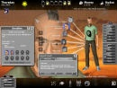
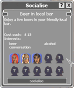
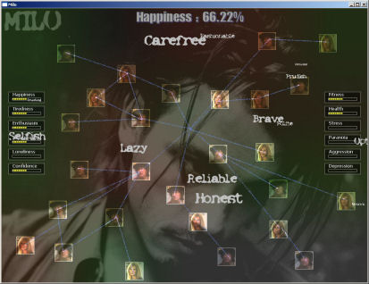
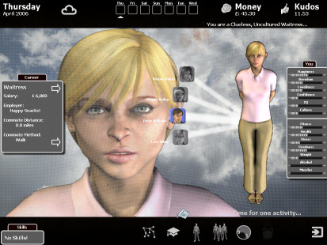
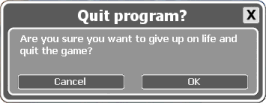

If there is a single theme every player can relate to, it’s life itself. After all, we are all living one. But what if you want to try a different life? Cliff Harris of Positech Games can help you out. He just released his new game, the life-sim Kudos. I talked to him about the decisions you face when designing life.
Kudos is a rich simulation game that let’s you live your life the way you want it. It doesn’t try to simulate every aspect of life, though. “Any game dealing with reality has to ‘pick it’s battles’ and primarily, Kudos concentrates on your education and social life,” Cliff says, “The game ignores your house and its contents mostly. The whole topic of where to live is ignored, as is any contact with your family.”
An important part of Kudos is the interaction with your friends. Here, too, Cliff had to look for what to include in the simulation and what to leave out. “The problem is, the game needs to be simple enough to pick up and play,” Cliff explains. “I did mess about with the idea of you deciding who talks to who when, and where people sit when you invite people out, so it had a kind of ’social-interaction’ minigame in there. At the end of the day I decided it should be more strategic, so you decide that you will spend time with person X, but don’t get too obsessive about what you talk about. There’s definitely potential for a more involved game there though.” The style of Kudos is pretty casual, but it wasn’t always like that. “The original version was much darker. You could go insane, become paranoid or psychotic, etcetera. It would probably have limited the game’s appeal, though. It wasn’t a conscious decision to change the style, more one based on getting the right gameplay elements together. I could come up with more stuff to affect happiness and boredom than I could paranoia or psychosis.”
Since Kudos is unlike most games people have played, it needs to show first-time players around. “There’s a short tutorial, and I also have some ‘hint’ windows which pop up the first time certain things happen,” Cliff says. “You get told what you need to know to play the game, but a lot of stuff is there for you to discover. Certain options become available if you do well in particular careers, for example, and you don’t really know everything that’s in the game before you play it. I prefer it that way, because you never knows what’s going to happen next. The game doesn’t tell you it has crime until you get mugged in the street or burgled, and it doesn’t immediately tell you how to stop it from happening either. There is a lot of hidden stuff in the game.”
Kudos uses quite a bit of text to convery information. With many game developers warning that ‘players don’t read’, this might be a tough design problem, but Cliff wasn’t worried. “Democracy, my last game, was even more text-heavy, and people seemed to like it. I think if the text is actually conveying information, people don’t mind. It’s when text is all just for adding colour to an RPG or similar, that having too much can bore or irritate people. Some people don’t like text in a game, but they tend to be people looking for an FPS, so they’re not my core audience anyway.” Cliff had to design the game’s interface from the ground up, because there was no similar game he could take ideas from. “Designing a game interface from scratch with nothing to copy is absolute hell, way harder than people think. Designing another RTS or FPS interface is trivial by comparison. The original interface was hilariously bad, and I went through many different versions. There was a huge amount of tweaking and changing. At one point the background was a psychedelic blob of colour that changed in line with your emotional state. There was another version with tons of lines spiraling all over the place." 
The result of all this tinkering is a clean interface that is easy to use. “I’ve found that I end up trusting my own instincts on interface stuff quite a bit. I knew that the interface didn’t feel right, so it’s just a matter of randomly tweaking it until you know it feels more usable. I tend to have a kind of subconscious idea about how the interface should feel, and I mess around a lot until I see it getting closer to that idea in my head. It’s like not knowing how to do it, but just knowing when it looks wrong.” 
An intricate simulation game like Kudos requires careful balancing. With every change Cliff makes to the game, he needs to make sure the balance isn’t negatively affected. For instance, shortly after the game was available, Cliff released a patch that changed the amount of activities you can undertake during the weekend from one to two. “I did quite a lot of playthroughs of the game when I made that change to make sure the gameplay still worked, as I did worry about it initially, but it seemed to work out pretty well,” he says. “I think initially I released the game in a state where it was too hard anyway, so ironically that kind of redressed the balance. However, it’s also not as big a difficulty change as people think. Yes, you have two actions, but almost everything you do costs money or has some effect you might not want anyway. You can now go jogging twice on a saturday, but that makes you twice as tired.” Something else that can potentially upset the game’s balance, is the fact that Kudos allows players to mod the game in several ways. Cliff sees no harm in this, however. “They bought it, so they can do what they want. All modders know that they can wreck a game by modding, and they can always reinstall it. ” He adds: “99% of people who tinker with a level editor don’t make anything better than the original, but it’s just fun to tinker. When a game is really easy to mod, I see no reason to prevent people who bought the game doing it.”
Cliff isn’t done with Kudos yet. “I’d like to really expand on the mod support for Kudos when I get time. The game has an auto-download feature where anyone who makes a cool new mod can ask me to list it so all the players can give it a try.” And that’s not all. “I like to add content, but I don’t want to just add more of the same. The basic model of adding a new activity or object that has effect X or Y is fine, but quantity is not quality. I’d rather add completely new things. The journalist career is one example. It’s not just like any other career, because the new ability it adds (investigate story) is partly dependent on how many people you know, in order to get leads. So this adds a new  element to gameplay where journalists have to always be socialising and meeting new people. I want to add in more things like that. If the game continues to sell okay, I can justify keeping working at it for longer, and releasing more updates. I certainly haven’t stopped working on it yet.”
You candownload kudosand try it for yourself.